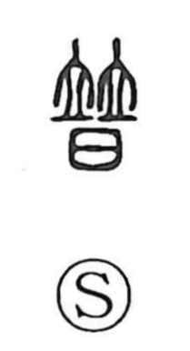

普

Uncategorized
Kun: amaneku, amaneshi | On: fu
universal ・ widespread ・ general ・ all
Explanation
普 is a compound graph formed from 竝 (並), depicting two people standing side by side, and 日, which here represents a ritual vessel (sai) containing a written prayer or oath rather than the sun. Built on the same constructive principle as the original form of 曹 (棘 + 日), it pictures people lined up to make a solemn covenant. From this scene of collective swearing the meaning extends to “all,” and by extension “universal,” “widespread,” and “broadly reaching.”